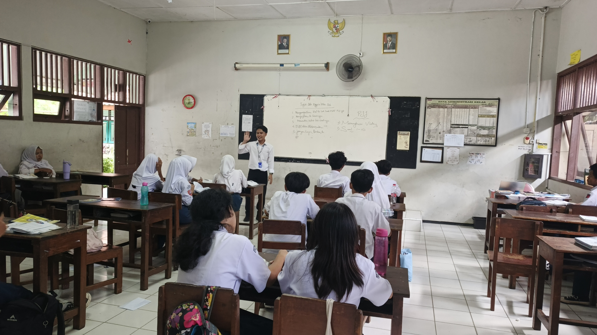
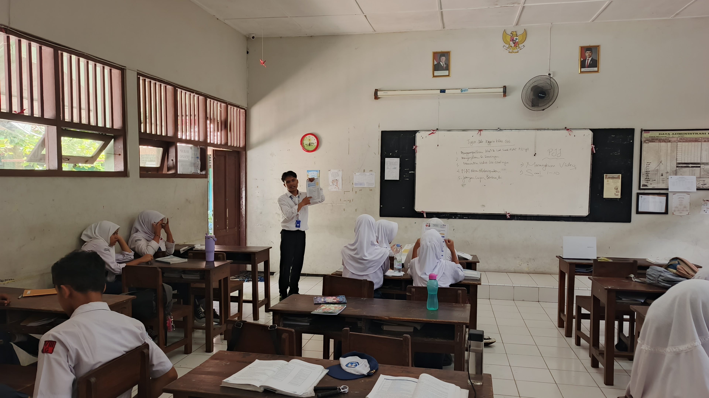
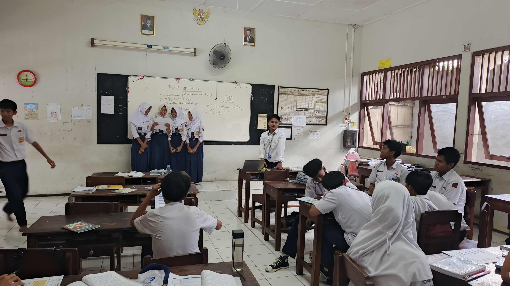

Catatan refleksi atas perangkat pembelajaran Informatika kelas VIII F yang mengajak siswa berpikir runtut lewat keseharian di Surakarta, mulai dari meracik es dawet, memilih rute Batik Solo Trans, sampai mengenal fungsi sebagai mesin yang mengubah masukan menjadi keluaran.
Berpikir Komputasional dan Konsep Fungsi, Fase D Kelas VIII F
Modul ini dirancang untuk satu pertemuan berdurasi 2 JP dengan kegiatan unplugged, jadi tidak membutuhkan komputer sama sekali. Siswa diajak mengenal empat fondasi berpikir komputasional, yaitu dekomposisi, pengenalan pola, abstraksi, dan algoritma. Setelah itu mereka memahami fungsi sebagai mesin ajaib yang punya masukan, proses, dan keluaran, menemukan pola fungsi linear, lalu berkenalan dengan fungsi berantai. Model yang dipakai adalah Discovery Learning yang dipadukan dengan Cooperative Learning.
Pendekatan modul ini sejalan dengan teori belajar penemuan dari Jerome Bruner. Siswa tidak sekadar diberi rumus, tetapi diajak mengamati data pertumbuhan tanaman, melihat selisihnya yang tetap, lalu merumuskan sendiri aturan mesinnya.
Pembagian siswa dalam kelompok kecil berisi 4 sampai 5 orang menerapkan gagasan Lev Vygotsky bahwa pemahaman tumbuh lewat percakapan dan bantuan teman sebaya. Sementara itu, empat fondasi berpikir komputasional merujuk pada gagasan Jeannette Wing tentang berpikir komputasional sebagai keterampilan dasar yang bisa dipakai di banyak bidang.
Slide pendamping untuk menjelaskan materi di kelas
Salindia ini dipakai guru sebagai teman bercerita di depan kelas. Urutannya mengikuti modul: pertanyaan pemantik tentang es dawet dan rute bus, pengenalan empat fondasi berpikir komputasional, penjelasan mesin fungsi lewat contoh membeli gula di warung dan data pertumbuhan tanaman, lalu petunjuk pengerjaan LKPD.
Perancangan media ini berpegang pada teori pembelajaran multimedia dari Richard Mayer. Kata dan gambar disajikan bersama, dan hal hal yang tidak menunjang tujuan sebaiknya dikurangi supaya perhatian siswa tidak terpecah.
Dengan begitu, siswa dapat memusatkan perhatian pada gagasan utama, yaitu bagaimana sebuah masukan diolah oleh aturan tertentu menjadi keluaran.
Lembar kerja kelompok dengan empat bagian bertingkat
LKPD terdiri dari empat bagian. Bagian 1 mengajak siswa menjodohkan situasi di Surakarta dengan fondasi berpikir komputasional. Bagian 2 berisi mesin ajaib serabi dan es dawet serta mesin hitung Pak Supri untuk menemukan rumus fungsi. Bagian 3 menantang siswa menelusuri tiga mesin pengubah bentuk yang disusun berurutan. Bagian 4 menutup dengan refleksi tentang arti fungsi dan sikap kerja sama kelompok.
Struktur LKPD ini mencerminkan Contextual Teaching and Learning. Kehidupan nyata di Surakarta ditarik ke dalam kelas sehingga siswa melihat bahwa berpikir komputasional dan fungsi bukan sekadar pelajaran di buku.
Kerja kelompok pada Bagian 2 dan 3 menerapkan prinsip Zone of Proximal Development dari Vygotsky. Siswa saling menjelaskan, saling membetulkan, dan bersama sama sampai pada rumus mesin yang tepat.



Berisi lampiran 7 dan 8 tentang penilaian Guru Pamong.